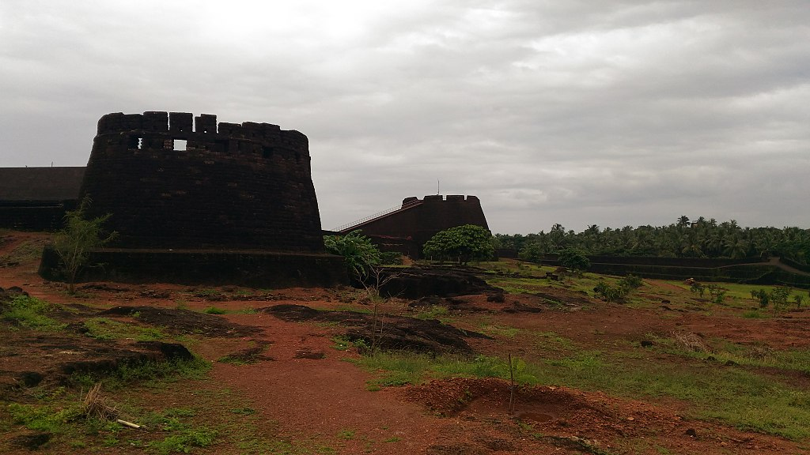

MalikDeenar Mosque

MalikDeenar Mosque is one of the oldest mosques in India.Malik Ibin Dinar Masjid is an important mosque located in the district of Kasaragod, Kerala . Over the centuries, Kasargod has gained a reputation as a major Muslim religious center on the west coast .
Theyyam
Theyyam is a popular ritual of worship in Kasargod.Theyyam is a dancing goddess. Teyyattinre dancer teyyattam teyyattinre the role of the teyyakkealam known. Theyyam art, which is full of devotional worship, mixes magical ritual, tantric ritual, karmic ritual, and ritual ritual. Theyyams are mainly mother gods (eg Muchilot Bhagwati). Also heroes are worshiped as Thayyams (eg Kathivannur Hero). It is said that there are about five hundred theses. There are, however, more than one hundred and twenty theses.
Ranipuram hills
Ranipuram/Madathumala an attractive tourist destination at Kasargod. Ranipuram is a renowned tourist destination in the northern tip of Kerala. Located in Kasaragod, it is situated 750 m above sea level. It makes for a perfect picnic spot where one can even come across the occasional herd of elephants. Once known as Madathumala, it borders Karnataka and boasts of some of the best trekking trails in the area. Regular buses are available on this route and jeep rides are another favourite among all our visitors. The versatile vegetation that includes evergreen shola woods, monsoon forests and grasslands make it a good place to relax and take some time off from the rigors of daily life.
Bekal fort
Bekal fort is the top tourist spot in Kasaragod. Bekal fort and Bekal fort beach (Pallikkara beach) is one of the finest tourist destination in Kerala. There are luxurious hotels and beach resorts are surrounding Bekal Fort.Around 16 km to the south of northernmost district in Kerala, Kasaragod, lies the massive Bekal Fort. It is among the biggest forts in Kerala and has been impeccably maintained throughout the years. It rises to 130 feet above sea level and is situated on a headland spanning 35km. Much effort has been put to develop a beautiful beach here called the Bekal Fort Beach. People flock to these spots in great numbers. Situated comfortably on steep hills by the sea, the fort provides for an imposing view from the beach. Built using laterite slabs and with a polygonal shape, it is amongst the most visited sites in Kerala.
Kappil Beach

Kappil Beach, Kasaragod,Beaches are about feeling one’s own heart beat frantically as a mighty being pulsates right in front of us. The ebbs and flows of our existence become one with sea, and that is why the few who make the trip to Kappil Beach, swear by it at all times. It is famous for its seclusion and rightly so. Large spaces of pristine sand and a divine water body in front with no other disturbance whatsoever is something people seek in growing numbers these days. Among the finest and cleanest beaches in God’s Own Country, this is a destination perfect for those who seek solitude and a place to face their own selves in peace.
Parappa Wildlife Sanctuary

Parappa Wildlife Sanctuary is a paradise for nature lovers and a fine ranked in the list of tourist places in Kasaragod. It is a natural habitat of some underrated fauna like a slow turtle, the prickly porcupine, Malabar hornbill, Slender loris, and the cute wild jungle cat. If wilderness attracts you, this locale is a must visit for some great wildlife photography. Hike around the sanctuary and click around some rare species.
Thaikadappuram Beach

Thaikadappuram Beach is an ideal locale for a peaceful vacay! If rare and unexplored fauna catches your attention then you must visit this beach in the monsoon season to watch some olive ridley turtles. Watch the sand turn golden and the sun setting with vivid colors. Just sit in silence and see the wonders nature has to offer or have a frolicking time with your troop at one of the best tourist places in Kasaragod.
Malom Wildlife Sanctuary

Malom Wildlife Sanctuary is a blend of magnificent tropical fauna and wildlife, this sanctuary is home to animals like Elephants, Tigers, Bison, Deers and about 200 species of vivid birds, in case bird watching is your forte. If lucky enough you might get a sight of the Cobra, and python. The flora comprises of some rare herbs and other medicinal plants. Go and explore the wilderness taking sufficient time in hand, as this land has a lot of unexplored yet to be explored in house spots amongst the tourist places in Kasaragod.
Hosdurg fort

Hosdurg fort is also, subtly known as the Kanhangad fort. The construction of this fort is what it makes it eye candy for the passerby tourists. What makes it so popular is its chain of forts, that came up in Ikkeri dynasty. Visit this monument to unveil the past. If seeking some spiritual enlightenment visit the popular spiritual center Nithya Anandashram located in the proximity of this locale. Additionally, this is one of the least explored tourist places in Kasaragod and hails out to the history lovers.